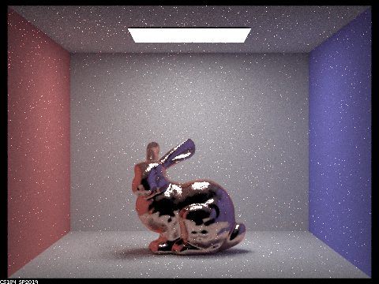
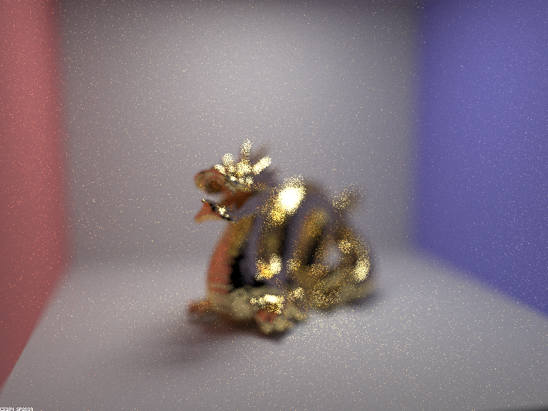

Overview
After project 3-1, we've implemented a simple diffuse material, but have yet to include more advanced materials like glass (transparent materials that refract and reflect), mirror materials (complete reflection) as well as microfacet materials.
In this project, we implement these materials, as well as a new environment light, which uses a texture (created from a 360-degree image of a scene) to sample that scene's lighting and use that to light objects
in the scene.
Finally, we also implement a virtual camera model to improve our pinhole camera model, by introducing a thin lens and aperture to our camera to create depth of field effects.
Part 1: Mirror and Glass Materials
In order to implement glass and mirror materials, these helper functions are implemented: reflect and refract.
-
reflect simply takes the incoming direction and negates the x and y components.
- This is possible as the surface normal is in the positive z direction as the calculations are done in object coordinate space.
-
In MirrorBSDF::sample_f, wo is used in reflect function to get wi.
- The reflectance divided by abs_cos_theta of wi is returned. The division is to cancel out the cosine term that at_least_one_bounce_radiance will weight the sample by.
- pdf is returned as 1 as there is only 1 possible ray that can be reflected on the point, so the probability is 1.
- refract is slightly trickier:
- The ratio of the old index of refraction to new index of refraction is calculated. The index of refraction for air is taken to be 1. For transiting from air to the material (entering), the ratio would be 1/ior and from material to the air (exiting) it will be ior. This value is used in subsequent calculations for the direction of the refracted ray.
- The ray is checked if it undergoes total internal reflection. If it does, false is returned and no refraction occurs.
- If not, Snell's law is used to calculate the new spherical coordinates of the refracted ray, and convert them back to Cartesian coordinates, and populate wi.
- For the sign of z-value of the refracted ray, it is assigned to be on the other side of the x-y plane from the wo ray.
- With refract implemented, GlassBSDF::sample_f can be implemented.
- Use refract to check for total internal reflection.
- If there is, the ray is reflected completely and wi is set with reflect. pdf is returned as 1 and the Spectrum returned is the same as in MirrorBSDF::sample_f.
- If there is refraction, Schlick's approximation is used to calculate R, the reflection coefficient. to get the probability of the light being reflected.
- is assigned to be R, and Spectrum is returned similarly as to the total internal reflection case, but weighted by R.
- Else, wi is assigned with refract and pdf is set to 1-R. Spectrum is returned as the transmittance of the material weighted by 1-R, abs_cos_theta(*wi) and eta^2
- eta is the ratio calculated in refract.
|
We only get direct lighting. |
We get direct and indirect lighting. |
|
Reflection off the spheres is apparent. |
Refraction is apparent as the rays exit the glass. |
|
The light rays can reflect off the ground. |
More rays can bounce inside the sphere to exit at reflect off the wall. |
Radiance has converged with no significant change.
Analysis of ray bounce and lighting in scene
- With 0 bounces, only direct lighting effects are seen.
- With 1 bounce, the mirror and glass surfaces do not reflect light into the camera, and only indirect and direct lighting effects appear.
- With 2 bounces we are able to see reflections on the mirror and glass surfaces. However, for the glass ball, since a lot of the light depends on the refraction of light rather than reflection, it is mostly black.
- With 3 bounces, we can finally see the refraction of light inside the ball and it appears as glass. We also notice that the reflection of the walls of the box on the mirror ball are lit, as light rays have enough depth to bounce on the wall, on to the mirror ball, and into the camera.
- With 4 bounces, the light inside the ball can reflect off the ground and thus there is a concentrated spot on light underneath the glass ball.
- With the light inside can also reflect off more times inside the ball to cast a secondary bright spot on the red wall on the right.
- With 100 bounces, we do not see any significant changes in the lighting of the scene.
Part 2: Microfacet Materials
In microfacet materials, we have to include multiple components in order to correctly represent both the macro-surface and micro-surface properties of the material.
- In MicrofacetBSDF::f, the radiance of the point is calculated with the Fresnel term, the shadow-masking term and the normal distribution function (which represents the micro-surface normals).
- The normal distribution function uses a Beckmann distribution. We query the distribution at the half-vector, since we know that the microfacets that reflect the ray are only able to reflect wo to wi when the normal is the half vector.
- The Fresnel term takes into account the parallel and perpendicular reflections and averages them. We use eta and k that represent RGB values to refract instead of calculating over every possible wavelength.`
-
Lastly, importance sampling is implemented:
- We generate 2 random numbers from 0 to 1 and use these to generate our random phi and theta values.
- The normal is calculated from these values. We reflect wo along the normal to get wi.
- We check if the reflected ray is valid. If it is not, we return pdf as 0 and empty Spectrum.
- To find pdf, we use the inversion method described in this website.
- Finally, sample the microfacet material with wo and wi and return the Spectrum.
Implementation of the above terms as follows:
|
The shiniest, most reflective dragon. |
Not as shiny, but diffusing light into the camera. |
|
Diffused light is more apparent. |
Diffused light is most apparent. |
As alpha increases, the lobe of diffused light grows, and this results in more diffusion of a ray of light on onne area. However, this also decreases the mirror properties as well, with the first dragon of alpha = 0.005 being the most reflective and the dragon of alpha = 0.5 being the least perfectly reflective.
|
Bunny is noisy and reflections are not apparent. |

Reflections on bunny are better represented. |
Cosine sampling is less effective as we are randomly sampling over the entire hemisphere of reflection. As such, we are likely to find rays of light with very low or 0 radiance and thus the bunny appears dark and noisy. However, we know that for microfacet materials, the reflection lies within a lobe that is centred around the perfect reflection direction. As such, in importance sampling, our random sample only comes from this lobe, and we can better approximate the reflective properties of the microfacet material.
Part 3: Environment Light
In environment lighting, instead of declaring light sources, we use an image to represent a 360-degree sphere of light around the scene. This is typically captured using a 360-degree camera. The idea behind that is that this picture captures a colour of light from the environment that will hit the 360-degree camera, and thus we can simulate the object, in this case our bunny, at the position of the camera. We do this in order to simulate both direct and indirect lighting lighting up the object, and is a convenient way to "transplant" virtual objects into such captured light environments.
In this part, I used the field.exr environment light.|
Bunny is noisy. |
Much less noise. |
|
Bunny is noisy. |
Much less noise. |
Cosine sampling is less effective as we are randomly sampling over the entire hemisphere of reflection. As such, we are likely to find rays of light with very low or 0 radiance and thus the bunny appears dark and noisy. However, we know that for microfacet materials, the reflection lies within a lobe that is centred around the perfect reflection direction. As such, in importance sampling, our random sample only comes from this lobe, and we can better approximate the reflective properties of the microfacet material.
Part 4: Depth of Field
A pinhole camera model takes all the light passing through a point, which is what we did in project 3. However, now we implement a thin lens model in order to bend light towards the sensor.
The effect is that only objects at the focal distance are in focus, and for everything else, the light rays from those areas end up blurry, since the light rays do not come from a single point at the focal
distance.
In order to calculate the rays from the object refracted in the lens that reach the sensor, we perform these steps.
- As per project 3, we calculate where on the sensor the pixel we are trying to render is located.
- However, this location in camera space is now at z = 1.
- We calculate the direction of the ray through the centre of the lens, since this ray does not get refracted.
- We then calculate the t value of the ray at the focal distance.
- We also randomly generate a point on the lens where the ray refracts to the sensor.
- We then calculate the direction of this new refracted ray.
- We convert the position and direction to world space, and add the camera position to this ray.
- We then return the ray after setting the appropriate near and far clipping planes.
|
Dragon snout is in focus. |

Dragon snout to body is in focus. |
|
Snout is blurry, body in focus. |
Only tail in focus. |
We see the sections of the dragon come in and out of focus as we adjust the focal distance further and further away from the dragon's snout. This is due to the divergent light rays at the focal plane intersecting at the sensor plane, but for the sections of the dragon where it is not at the focal distance, the rays do not perfectly converge and thus the image comes out blurry.
|
Whole image is in focus. |
Edges of the Cornell box not in focus. |
|
Only the centre portion at the dragons mouth in focus. |

Only the dragon's lips in focus. |
As we adjust aperture, we control the amount of rays that are bent towards the sensor. Originally, if the aperture is very small, only a small portion of light rays are bent and thus only a small portion of the fringes of the photo are blurry. However, as we increase the aperture, more light rays are bent towards the sensor plane, and the fringes are not at the sensor plane, so it gets blurrier.